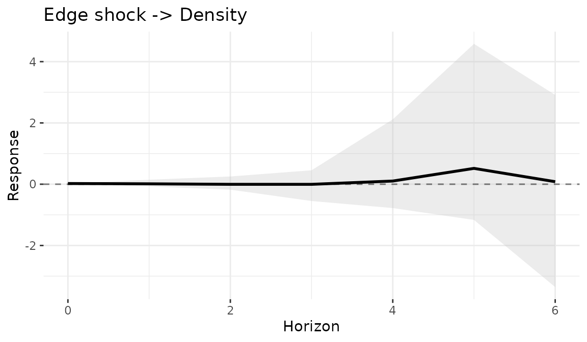
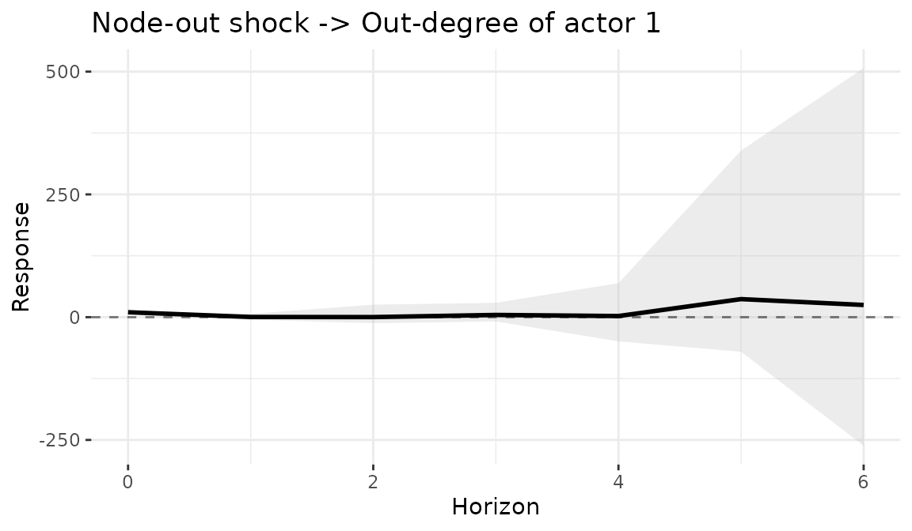
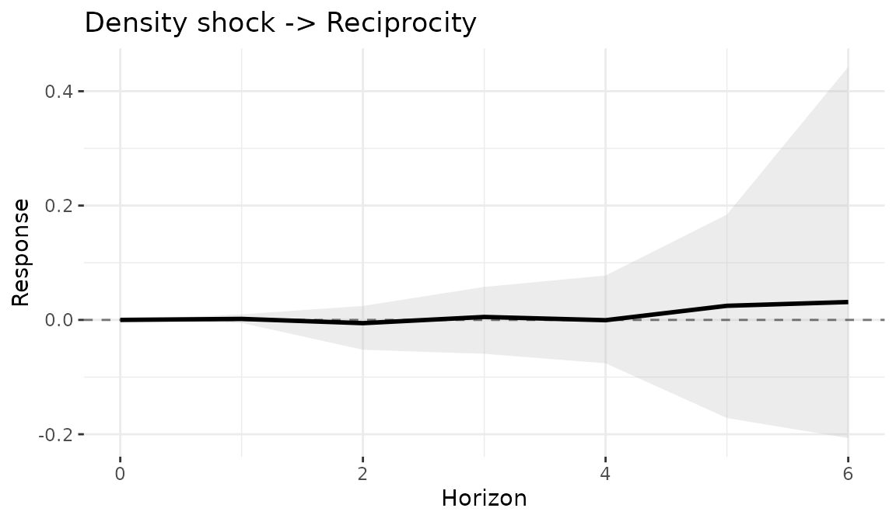
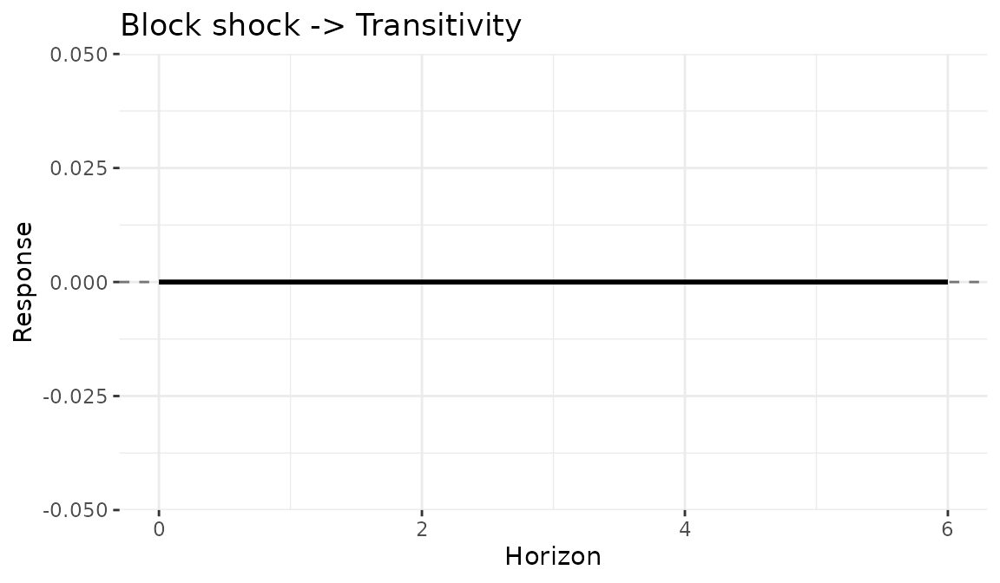
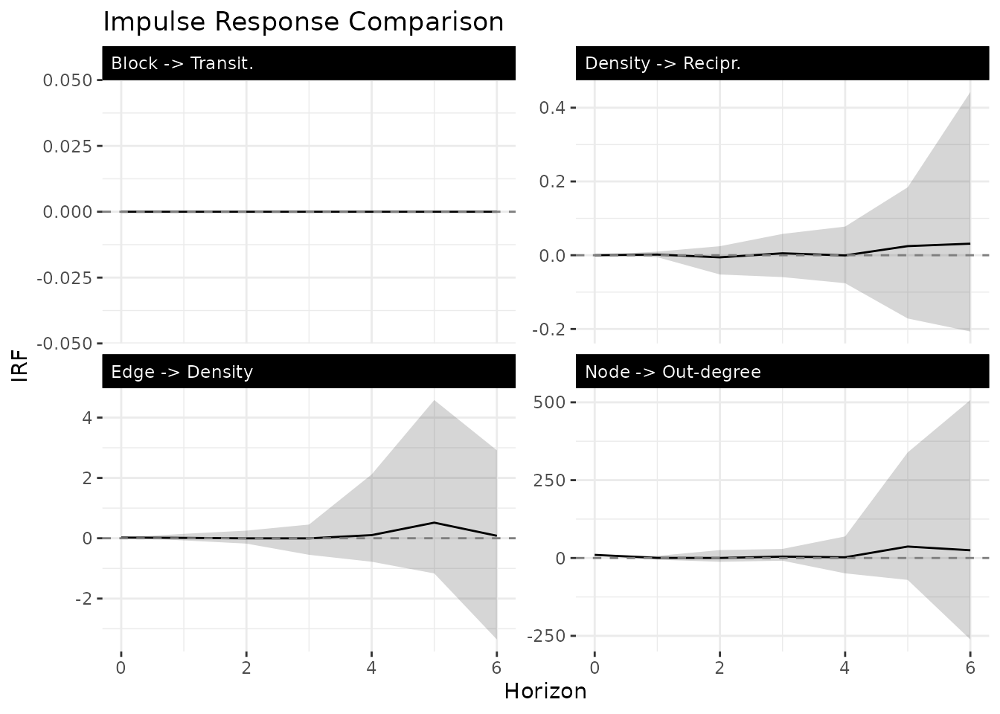

Impulse response analysis for network models
Tosin Salau & Shahryar Minhas
2026-03-16
Source:vignettes/impulse_response.Rmd
impulse_response.Rmd1 Overview
Impulse response functions (IRFs) measure how a shock to the network propagates through the bilinear dynamics over time. Given the model , we inject a perturbation at time and track a network-level statistic (density, degree, reciprocity, etc.) over horizons.
2 Fit a dynamic model
IRFs require a fitted model with time-varying and matrices. We use a Gaussian family for cleaner interpretation. The example below uses minimal settings for fast vignette building; see Section 8 for recommended settings in practice.
sim = simulate_dynamic_dbn(
n = 10, p = 1, time = 10,
sigma2 = 0.3, tauA2 = 0.03, tauB2 = 0.03,
seed = 123
)
fit = dbn(
sim$Y,
model = "dynamic",
family = "gaussian",
nscan = 300,
burn = 150,
odens = 1,
verbose = FALSE
)3 Building shock matrices
The build_shock() function creates structured
perturbation matrices:
m = 10
# Shock a single edge (i -> j)
S_edge = build_shock(m, type = "unit_edge", i = 1, j = 2, magnitude = 2)
# Shock all outgoing edges from actor i
S_node = build_shock(m, type = "node_out", i = 1, magnitude = 1)
# Uniform density shock to all edges
S_dens = build_shock(m, type = "density", magnitude = 0.5)
# Custom shock matrix
S_custom = matrix(0, m, m)
S_custom[1:3, 4:6] = 1.04 Unit edge shock – network density
Track how a single edge shock affects overall network density:
irf_dens = compute_irf(
fit,
shock = S_edge,
H = 6,
t0 = 2,
stat_fun = dbn::stat_density,
n_draws = 20
)
plot(irf_dens, title = "Edge shock -> Density")
print(irf_dens)
#> Network Impulse Response Function
#> Model: dynamic
#> Statistic: custom_function
#> Shock time: 2
#>
#> Summary:
#> horizon mean median sd q025 q975 q10 q90
#> 1 0 0.022 0.022 0.000 0.022 0.022 0.022 0.022
#> 2 1 0.012 -0.001 0.056 -0.071 0.146 -0.044 0.062
#> 3 2 -0.004 0.013 0.128 -0.178 0.252 -0.154 0.092
#> 4 3 -0.004 0.003 0.268 -0.549 0.454 -0.274 0.334
#> 5 4 0.103 -0.109 0.806 -0.779 2.115 -0.532 1.223
#> 6 5 0.516 0.252 1.711 -1.166 4.581 -1.130 1.165
#> 7 6 0.082 0.192 1.801 -3.356 2.914 -1.565 2.1815 Node shock – out-degree
Track the effect of activating all outgoing edges of actor 1 on that actor’s out-degree:
irf_deg = compute_irf(
fit,
shock = S_node,
H = 6,
t0 = 2,
stat_fun = function(X) stat_out_degree(X)[1],
n_draws = 20
)
plot(irf_deg, title = "Node-out shock -> Out-degree of actor 1")
6 Density shock – reciprocity
How does a uniform perturbation affect reciprocal ties?
irf_recip = compute_irf(
fit,
shock = S_dens,
H = 6,
t0 = 2,
stat_fun = stat_reciprocity,
n_draws = 20
)
plot(irf_recip, title = "Density shock -> Reciprocity")
7 Custom shock – transitivity
irf_trans = compute_irf(
fit,
shock = S_custom,
H = 6,
t0 = 2,
stat_fun = stat_transitivity,
n_draws = 20
)
plot(irf_trans, title = "Block shock -> Transitivity")
8 Comparing multiple shocks
Combine IRF results for a faceted comparison:
irfs = list(
"Edge -> Density" = irf_dens,
"Node -> Out-degree" = irf_deg,
"Density -> Recipr." = irf_recip,
"Block -> Transit." = irf_trans
)
df_all = do.call(rbind, lapply(names(irfs), function(nm) {
d = irfs[[nm]]
data.frame(
horizon = d$horizon,
mean = d$mean,
q025 = d$q025,
q975 = d$q975,
shock = nm
)
}))
ggplot(df_all, aes(x = horizon, y = mean)) +
geom_ribbon(aes(ymin = q025, ymax = q975), alpha = 0.2) +
geom_line() +
geom_hline(yintercept = 0, linetype = "dashed", color = "grey50") +
facet_wrap(~shock, scales = "free_y") +
labs(x = "Horizon", y = "IRF", title = "Impulse Response Comparison") +
theme_bw() +
theme(
panel.border = element_blank(),
strip.background = element_rect(fill = "black", color = "black"),
strip.text.x = element_text(color = "white", hjust = 0)
)
Note on settings: The examples above use small
networks (n = 10, time = 10) and short MCMC
chains (nscan = 300) for fast vignette building. For
publication-quality results, increase these settings:
# Recommended settings for substantive analysis
sim = simulate_dynamic_dbn(n = 30, p = 1, time = 50, seed = 123)
fit = dbn(sim$Y, model = "dynamic", family = "gaussian",
nscan = 5000, burn = 2000, odens = 5, verbose = FALSE)
irf = compute_irf(fit, shock = S_edge, H = 20, t0 = 25,
stat_fun = dbn::stat_density, n_draws = 200)9 Available network statistics
The stat_fun argument accepts any function that maps a
matrix to a scalar. Built-in statistics:
| Function | Description |
|---|---|
stat_density(X) |
Mean of off-diagonal entries |
stat_out_degree(X) |
Row sums (vector) |
stat_in_degree(X) |
Column sums (vector) |
stat_reciprocity(X) |
Correlation between and |
stat_transitivity(X) |
Clustering coefficient |
For degree-based statistics, wrap to extract a specific actor:
function(X) stat_out_degree(X)[i].